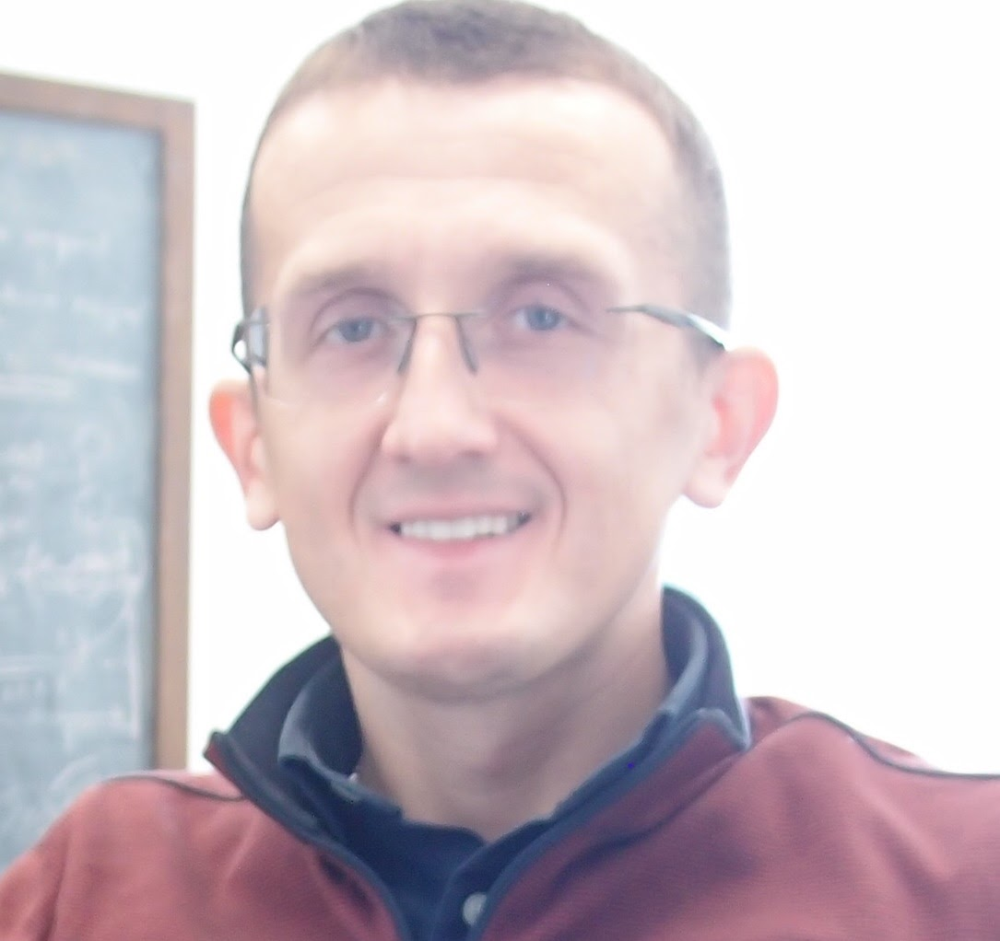

|  |
Dima Levko
Senior Research Scientist, Esgee Technologies Inc.
I was born in Lugansk, Ukraine in 1984. I got my Ph.D. in Physics from the Institute of Physics,
National Ukrainian Academy of Sciences with the focus on physical electronics in 2010 under the supervision of Dr. Anatoly Shchedrin.
|
| June, 2020 - present |
Senior Member Of Technical Staff / Plasma Sciences Lead at Esgee Technologies Inc., Austin, TX |
| Dec., 2017 - May, 2020 |
Senior Research Scientist, Computation Fluid Dynamics Research Corporation, Huntsville, AL |
| Feb., 2016 - Nov., 2017 |
Research Associate, Dept. of Aerospace Engineering & Engineering Mechanics, The University of Texas, Austin, TX, USA |
| Oct., 2014 - Feb., 2016 |
Post Doc, Dept. of Aerospace Engineering & Engineering Mechanics, The University of Texas, Austin, TX, USA; advisor Prof. Laxminarayan L. Raja |
| Oct., 2012 - Sept., 2014 |
Post Doc, LAboratoire PLAsma et Conversion d'Energie, GREPHE, Université Paul Sabatier, Toulouse, France; advisors Dr. Laurent Garrigues and Dr. Gerjan Hagelaar |
| Oct., 2010 - Sept., 2012 |
Post Doc, Technion - Israel Institute of Technology, Plasma and Pulsed Power Laboratory, Phys. Department, Haifa, Israel; advisor Prof. Yakov E. Krasik |
| Oct., 2010 - May, 2011 |
Researcher, Institute of Physics National Academy of Sciences of Ukraine, Gas Electronics Dept. |
| Nov., 2009 - Sept., 2010 |
Junior Researcher, Institute of Physics National Academy of Sciences of Ukraine, Gas Electronics Dept. |